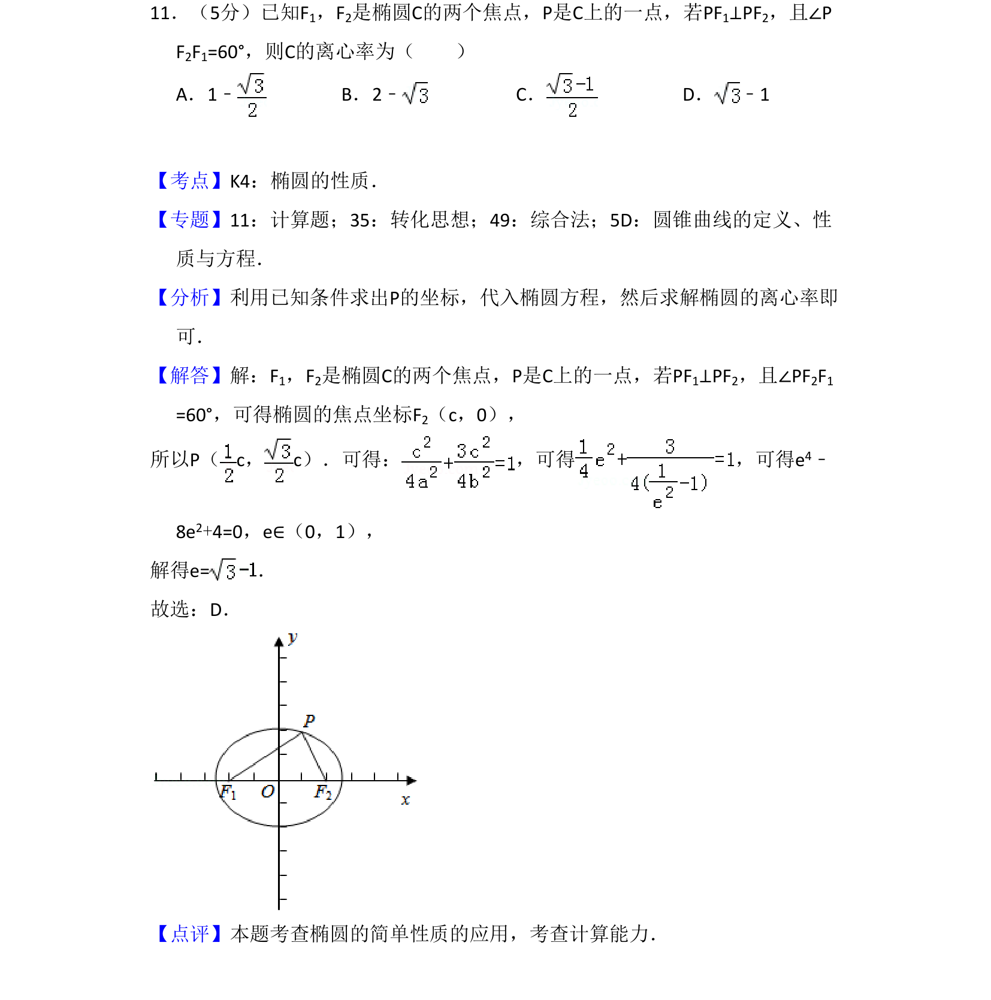
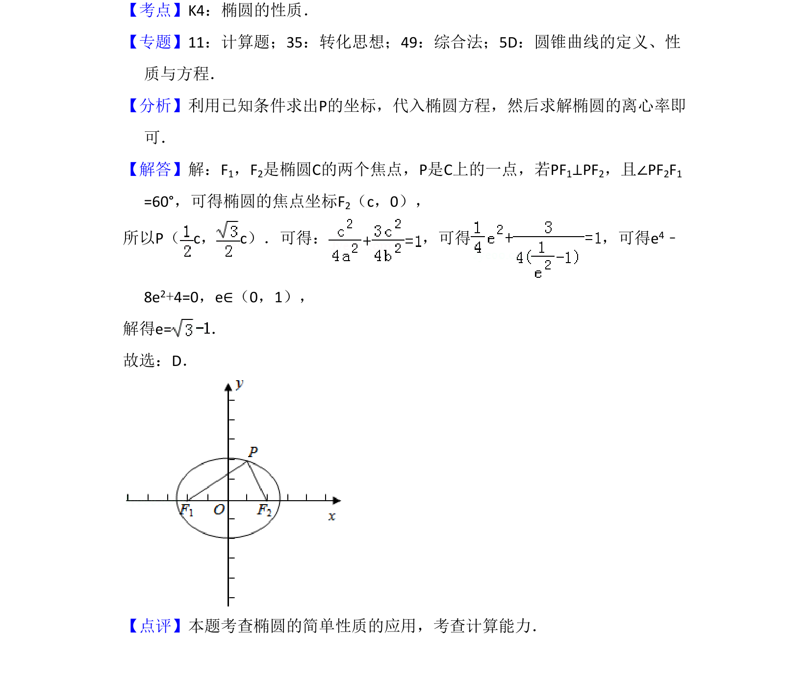

考点：椭圆性质 离心率 焦点 垂直关系

根据椭圆焦点和垂直条件建立方程求解离心率。

📄 原 PDF 第 8 页：
素材/真题/吉林/2008-2024·（吉林）数学高考真题/2018年高考数学试卷（文）（新课标Ⅱ）（解析卷）.pdf
11．（5分）已知F1，F2是椭圆C的两个焦点，P是C上的一点，若PF1⊥PF2，且∠P F2F1=60°，则C的离心率为（ ） A．1﹣B．2﹣C．D． ﹣1
【考点】K4：椭圆的性质．菁优网版权所有 【专题】11：计算题；35：转化思想；49：综合法；5D：圆锥曲线的定义、性 质与方程． 【分析】利用已知条件求出P的坐标，代入椭圆方程，然后求解椭圆的离心率即 可． 【解答】解：F1，F2是椭圆C的两个焦点，P是C上的一点，若PF1⊥PF2，且∠PF2F1 =60°，可得椭圆的焦点坐标F2（c，0）， 所以P（c，c）．可得： ，可得 ，可得e 4﹣ 8e2+4=0，e∈（0，1）， 解得e=． 故选：D． 【点评】本题考查椭圆的简单性质的应用，考查计算能力．